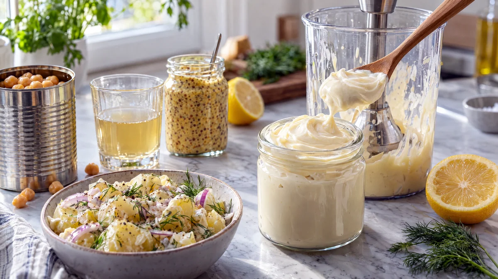

RESTFEST · RECEPTSåser & röror · Grundrecept
Äggfri majonnäs på kikärtsspad
Spadet från en burk kikärtor, en sked senap och neutral olja mixas på en minut till en tjock, blank majonnäs som är svår att skilja från den vanliga. Den håller ihop potatissallad, smörgåsar och dippsåser, och blir aioli med en vitlöksklyfta. Kikärtorna sparar du till hummusen i recept 105.
- Förberedelse
- 5 min
- Tillagning
- 0 min
- Portioner
- ca 3 dl
- Nivå
- Nybörjare
Bra att veta. Läs alltid innehållsförteckningen. Mjölk och ägg kan gömma sig i margarin, choklad, ströbröd, buljong, korv och bröd. Laktosfritt är inte mjölkfritt, laktosfria produkter innehåller fortfarande mjölkprotein.
 Det här behöver du
Det här behöver du
Tryck på + vid det du behöver köpa.
Gör så här
- Häll kikärtsspad, senap, vinäger, salt och socker i ett högt, smalt kärl, gärna det som följer med stavmixern.
- Häll i all olja och låt den lägga sig överst i några sekunder.
- Sätt stavmixern i botten av kärlet och starta den. Låt den stå stilla tills det börjar bli vitt och tjockt i botten, och lyft den sedan långsamt uppåt så att all olja dras ner.
- Mixa i ca 30 sekunder till, tills majonnäsen är tjock och blank. Smaka av med salt och vinäger.
- Skrapa över majonnäsen i en ren burk med lock och ställ den i kylen. Den tjocknar lite mer när den kallnar.
Dekoration och servering
- Rör ner 1 finriven vitlöksklyfta för aioli, till fisksoppan i recept 58 eller pan con tomate i recept 68.
- Rör ner hackade örter, chili eller lite rökt paprika för en smaksatt majonnäs.
- Använd den i potatissallad, coleslaw, smörgåstårta och smørrebrød (recept 20).
- Blir majonnäsen inte tjock, häll över den i ett annat kärl, tillsätt 1 msk nytt kikärtsspad i det första och mixa i den tunna majonnäsen långsamt igen.
- Majonnäsen håller ca en vecka i kylen.
Mått och ugnstemperaturer
Måtten är svenska (dl, msk, tsk, krm). Ugnstemperaturerna gäller vanlig ugn med över- och undervärme; med varmluft, sänk med 20 grader.